data <- read.csv("Data_Processed_Study5.csv")
data_wide <- read.csv("Data_Processed_Study5-Wide.csv")01_Analyses_Study5
table(data$study)
1 2 3 4
568 242 534 940 ns
table(data_wide$conditionSES)
High SES Low SES
569 573 Demographics
psych::describe(data_wide$ladder_Self) vars n mean sd median trimmed mad min max range skew kurtosis se
X1 1 1124 6.77 1.84 7 6.91 1.48 1 10 9 -0.67 0.11 0.05psych::describe(data_wide$income_Self) vars n mean sd median trimmed mad min max range skew kurtosis se
X1 1 1110 4.78 1.99 5 4.95 2.97 1 7 6 -0.48 -1.07 0.06psych::describe(data_wide$ed_Own) vars n mean sd median trimmed mad min max range skew kurtosis se
X1 1 655 2.65 0.68 3 2.58 1.48 1 4 3 0.3 -0.54 0.03table(data_wide$race_Self)
1 2 3 4 5 6 7
721 198 58 70 15 47 16 table(data_wide$gender_Self)
Female Male Non-Conform Other Trans
759 354 5 3 5 SES Manipulation Check
t.test(data_wide$ladder_Patient ~ data_wide$SES)
Welch Two Sample t-test
data: data_wide$ladder_Patient by data_wide$SES
t = 10.146, df = 709.28, p-value < 2.2e-16
alternative hypothesis: true difference in means between group High and group Low is not equal to 0
95 percent confidence interval:
0.9297787 1.3759448
sample estimates:
mean in group High mean in group Low
5.702997 4.550136 t.test(data_wide$income_Patient ~ data_wide$SES)
Welch Two Sample t-test
data: data_wide$income_Patient by data_wide$SES
t = 11.655, df = 678.07, p-value < 2.2e-16
alternative hypothesis: true difference in means between group High and group Low is not equal to 0
95 percent confidence interval:
0.8899493 1.2505586
sample estimates:
mean in group High mean in group Low
3.961853 2.891599 t.test(data_wide$ed_Patient ~ data_wide$SES)
Welch Two Sample t-test
data: data_wide$ed_Patient by data_wide$SES
t = 11.065, df = 668.33, p-value < 2.2e-16
alternative hypothesis: true difference in means between group High and group Low is not equal to 0
95 percent confidence interval:
0.405674 0.580702
sample estimates:
mean in group High mean in group Low
2.618529 2.125341 Lazy
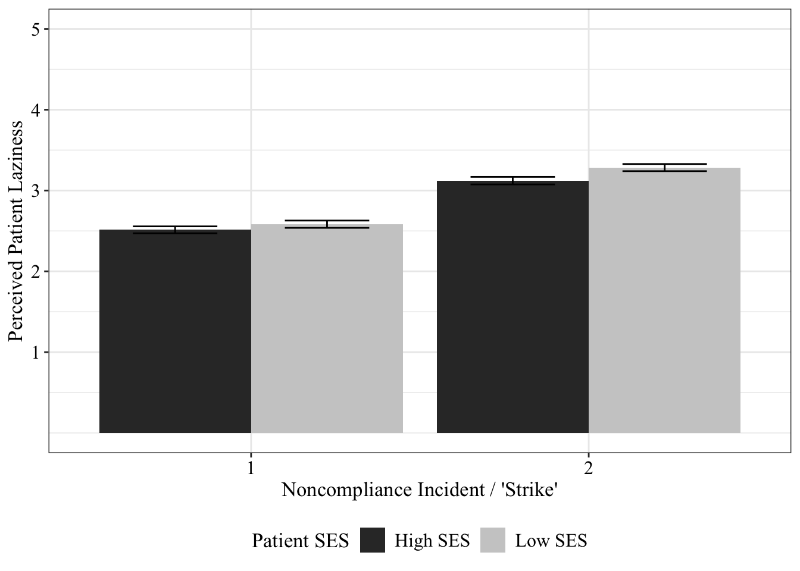
Type III Analysis of Variance Table with Satterthwaite's method
Sum Sq Mean Sq NumDF DenDF F value Pr(>F)
conditionSES 0.087 0.087 1 1072.55 0.1594 0.689756
strike 158.827 158.827 1 641.58 291.6825 < 2.2e-16 ***
ladder_Self 0.696 0.696 1 639.22 1.2777 0.258753
income_Self 0.824 0.824 1 639.33 1.5141 0.218970
study 0.331 0.331 1 639.89 0.6080 0.435840
ed_Own 0.110 0.110 1 638.98 0.2025 0.652880
conditionRace 4.361 4.361 1 639.20 8.0096 0.004799 **
conditionSES:strike 2.754 2.754 1 641.58 5.0576 0.024856 *
---
Signif. codes: 0 '***' 0.001 '**' 0.01 '*' 0.05 '.' 0.1 ' ' 1# Effect Size for ANOVA (Type III)
Parameter | Eta2 (partial) | 95% CI
---------------------------------------------------
conditionSES | 1.49e-04 | [0.00, 1.00]
strike | 0.31 | [0.27, 1.00]
ladder_Self | 1.99e-03 | [0.00, 1.00]
income_Self | 2.36e-03 | [0.00, 1.00]
study | 9.49e-04 | [0.00, 1.00]
ed_Own | 3.17e-04 | [0.00, 1.00]
conditionRace | 0.01 | [0.00, 1.00]
conditionSES:strike | 7.82e-03 | [0.00, 1.00]
- One-sided CIs: upper bound fixed at [1.00].$emmeans
conditionSES strike emmean SE df lower.CL upper.CL
High SES 1 2.62 0.0622 979 2.50 2.74
Low SES 1 2.75 0.0608 979 2.63 2.87
High SES 2 3.23 0.0623 979 3.11 3.35
Low SES 2 3.54 0.0609 981 3.43 3.66
Results are averaged over the levels of: conditionRace
Degrees-of-freedom method: kenward-roger
Confidence level used: 0.95
$contrasts
contrast estimate SE df t.ratio p.value
High SES strike1 - Low SES strike1 -0.127 0.0871 978 -1.459 0.4632
High SES strike1 - High SES strike2 -0.610 0.0589 642 -10.372 <.0001
High SES strike1 - Low SES strike2 -0.923 0.0872 979 -10.584 <.0001
Low SES strike1 - High SES strike2 -0.483 0.0871 978 -5.547 <.0001
Low SES strike1 - Low SES strike2 -0.796 0.0576 642 -13.820 <.0001
High SES strike2 - Low SES strike2 -0.312 0.0872 979 -3.581 0.0020
Results are averaged over the levels of: conditionRace
Degrees-of-freedom method: kenward-roger
P value adjustment: tukey method for comparing a family of 4 estimates Type III Analysis of Variance Table with Satterthwaite's method
Sum Sq Mean Sq NumDF DenDF F value Pr(>F)
conditionSES 0.096 0.096 1 1069.69 0.1761 0.674847
strike 158.836 158.836 1 641.86 291.7778 < 2.2e-16 ***
ladder_Self 0.557 0.557 1 634.41 1.0236 0.312051
income_Self 1.019 1.019 1 634.50 1.8727 0.171651
study 0.015 0.015 1 634.30 0.0273 0.868890
ed_Own 0.194 0.194 1 634.41 0.3556 0.551199
conditionRace 4.538 4.538 1 634.53 8.3369 0.004017 **
gender_Self 4.967 1.242 4 633.57 2.2813 0.059270 .
race_Self 1.898 1.898 1 636.55 3.4857 0.062360 .
conditionSES:strike 2.745 2.745 1 641.86 5.0431 0.025064 *
---
Signif. codes: 0 '***' 0.001 '**' 0.01 '*' 0.05 '.' 0.1 ' ' 1Type III Analysis of Variance Table with Satterthwaite's method
Sum Sq Mean Sq NumDF DenDF F value
conditionSES 0.103 0.103 1 1065.71 0.1886
strike 158.544 158.544 1 639.70 290.6588
conditionRace 2.459 2.459 1 1065.64 4.5079
ladder_Self 0.526 0.526 1 633.31 0.9651
income_Self 1.029 1.029 1 633.34 1.8873
study 0.010 0.010 1 633.18 0.0185
ed_Own 0.174 0.174 1 633.29 0.3196
gender_Self 4.968 1.242 4 632.44 2.2769
race_Self 1.675 1.675 1 635.80 3.0716
conditionSES:strike 2.789 2.789 1 639.70 5.1132
conditionSES:conditionRace 0.005 0.005 1 1068.17 0.0093
strike:conditionRace 0.284 0.284 1 639.70 0.5212
conditionSES:strike:conditionRace 0.119 0.119 1 639.70 0.2183
Pr(>F)
conditionSES 0.66421
strike < 2e-16 ***
conditionRace 0.03397 *
ladder_Self 0.32629
income_Self 0.16999
study 0.89182
ed_Own 0.57202
gender_Self 0.05969 .
race_Self 0.08015 .
conditionSES:strike 0.02408 *
conditionSES:conditionRace 0.92326
strike:conditionRace 0.47057
conditionSES:strike:conditionRace 0.64054
---
Signif. codes: 0 '***' 0.001 '**' 0.01 '*' 0.05 '.' 0.1 ' ' 1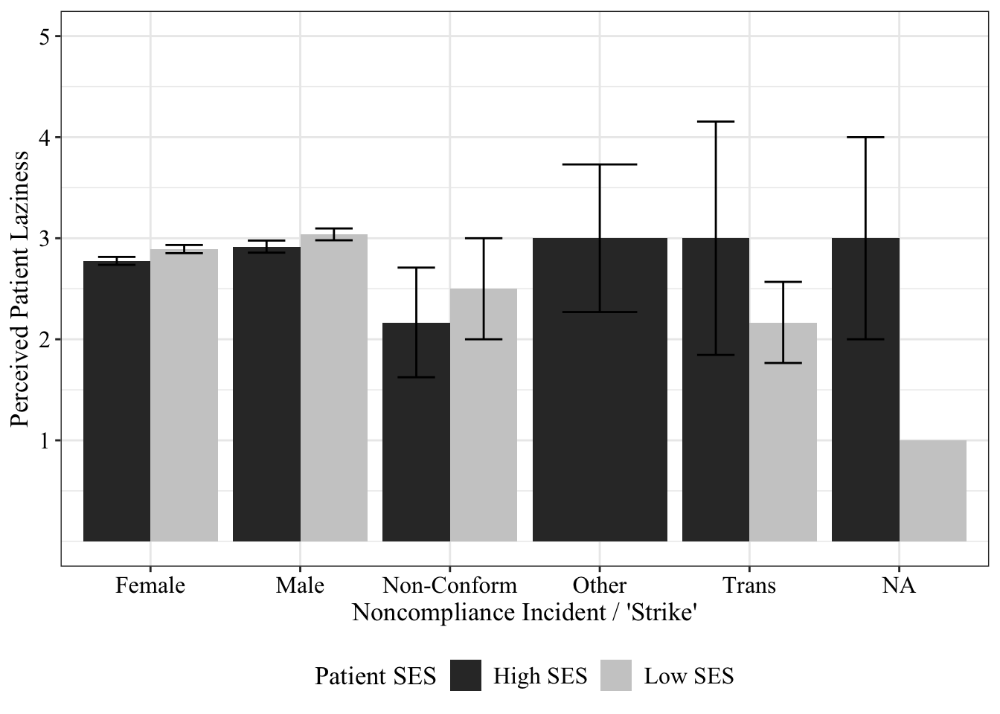
Honest
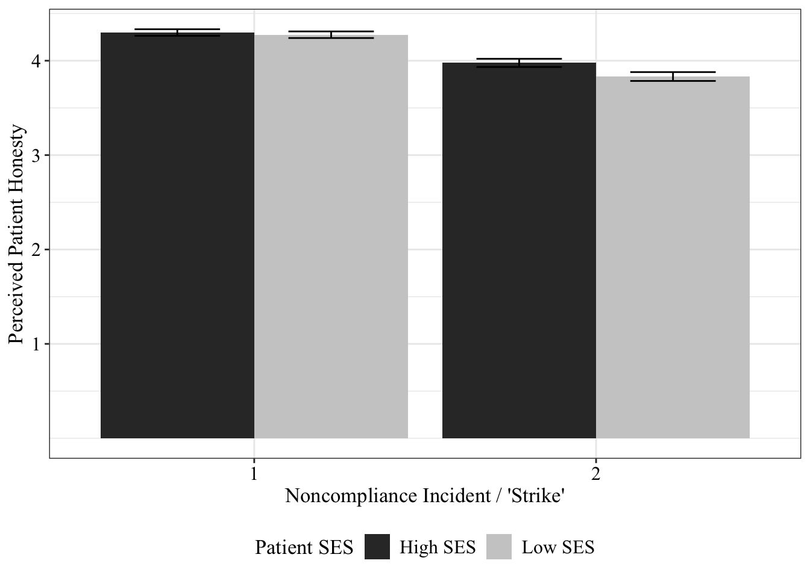
Type III Analysis of Variance Table with Satterthwaite's method
Sum Sq Mean Sq NumDF DenDF F value Pr(>F)
conditionSES 1.572 1.572 1 1042.48 3.3328 0.0681990 .
strike 58.190 58.190 1 638.53 123.3442 < 2.2e-16 ***
ladder_Self 1.919 1.919 1 641.93 4.0672 0.0441389 *
income_Self 0.436 0.436 1 640.42 0.9244 0.3366735
study 6.038 6.038 1 638.21 12.7990 0.0003731 ***
ed_Own 0.253 0.253 1 638.00 0.5361 0.4643103
conditionRace 3.323 3.323 1 637.77 7.0442 0.0081503 **
conditionSES:strike 5.263 5.263 1 638.57 11.1561 0.0008863 ***
---
Signif. codes: 0 '***' 0.001 '**' 0.01 '*' 0.05 '.' 0.1 ' ' 1# Effect Size for ANOVA (Type III)
Parameter | Eta2 (partial) | 95% CI
---------------------------------------------------
conditionSES | 3.19e-03 | [0.00, 1.00]
strike | 0.16 | [0.12, 1.00]
ladder_Self | 6.30e-03 | [0.00, 1.00]
income_Self | 1.44e-03 | [0.00, 1.00]
study | 0.02 | [0.01, 1.00]
ed_Own | 8.40e-04 | [0.00, 1.00]
conditionRace | 0.01 | [0.00, 1.00]
conditionSES:strike | 0.02 | [0.00, 1.00]
- One-sided CIs: upper bound fixed at [1.00].$emmeans
conditionSES strike emmean SE df lower.CL upper.CL
High SES 1 4.20 0.0563 1005 4.09 4.31
Low SES 1 4.19 0.0549 1001 4.08 4.30
High SES 2 3.91 0.0561 999 3.80 4.02
Low SES 2 3.64 0.0551 1007 3.53 3.75
Results are averaged over the levels of: conditionRace
Degrees-of-freedom method: kenward-roger
Confidence level used: 0.95
$contrasts
contrast estimate SE df t.ratio p.value
High SES strike1 - Low SES strike1 0.0116 0.0787 1002 0.147 0.9989
High SES strike1 - High SES strike2 0.2981 0.0548 640 5.435 <.0001
High SES strike1 - Low SES strike2 0.5660 0.0788 1005 7.179 <.0001
Low SES strike1 - High SES strike2 0.2864 0.0786 999 3.646 0.0016
Low SES strike1 - Low SES strike2 0.5544 0.0537 641 10.324 <.0001
High SES strike2 - Low SES strike2 0.2680 0.0787 1002 3.405 0.0038
Results are averaged over the levels of: conditionRace
Degrees-of-freedom method: kenward-roger
P value adjustment: tukey method for comparing a family of 4 estimates
Welch Two Sample t-test
data: honest by conditionSES
t = 2.0163, df = 2230.7, p-value = 0.04389
alternative hypothesis: true difference in means between group High SES and group Low SES is not equal to 0
95 percent confidence interval:
0.002271569 0.163381054
sample estimates:
mean in group High SES mean in group Low SES
4.137097 4.054270 Type III Analysis of Variance Table with Satterthwaite's method
Sum Sq Mean Sq NumDF DenDF F value Pr(>F)
conditionSES 1.606 1.606 1 1039.16 3.4100 0.0650868 .
strike 57.896 57.896 1 639.84 122.9110 < 2.2e-16 ***
ladder_Self 1.925 1.925 1 636.45 4.0875 0.0436206 *
income_Self 0.369 0.369 1 637.61 0.7833 0.3764538
study 6.233 6.233 1 634.98 13.2317 0.0002976 ***
ed_Own 0.562 0.562 1 633.33 1.1934 0.2750554
conditionRace 3.471 3.471 1 634.11 7.3677 0.0068211 **
gender_Self 7.601 1.900 4 651.78 4.0343 0.0030664 **
race_Self 0.068 0.068 1 637.74 0.1436 0.7048922
conditionSES:strike 5.298 5.298 1 639.89 11.2477 0.0008443 ***
---
Signif. codes: 0 '***' 0.001 '**' 0.01 '*' 0.05 '.' 0.1 ' ' 1Type III Analysis of Variance Table with Satterthwaite's method
Sum Sq Mean Sq NumDF DenDF F value
conditionSES 1.526 1.526 1 1037.87 3.2595
strike 57.289 57.289 1 637.94 122.3854
conditionRace 0.001 0.001 1 1037.87 0.0025
ladder_Self 1.973 1.973 1 635.58 4.2154
income_Self 0.373 0.373 1 636.70 0.7967
study 6.091 6.091 1 634.08 13.0122
ed_Own 0.524 0.524 1 632.50 1.1188
gender_Self 7.444 1.861 4 650.78 3.9757
race_Self 0.113 0.113 1 637.11 0.2420
conditionSES:strike 5.126 5.126 1 637.99 10.9515
conditionSES:conditionRace 0.448 0.448 1 1040.35 0.9565
strike:conditionRace 1.297 1.297 1 637.99 2.7704
conditionSES:strike:conditionRace 1.432 1.432 1 637.99 3.0594
Pr(>F)
conditionSES 0.0713019 .
strike < 2.2e-16 ***
conditionRace 0.9604438
ladder_Self 0.0404681 *
income_Self 0.3724060
study 0.0003338 ***
ed_Own 0.2905898
gender_Self 0.0033950 **
race_Self 0.6229102
conditionSES:strike 0.0009879 ***
conditionSES:conditionRace 0.3283055
strike:conditionRace 0.0965110 .
conditionSES:strike:conditionRace 0.0807515 .
---
Signif. codes: 0 '***' 0.001 '**' 0.01 '*' 0.05 '.' 0.1 ' ' 1Exaggerate
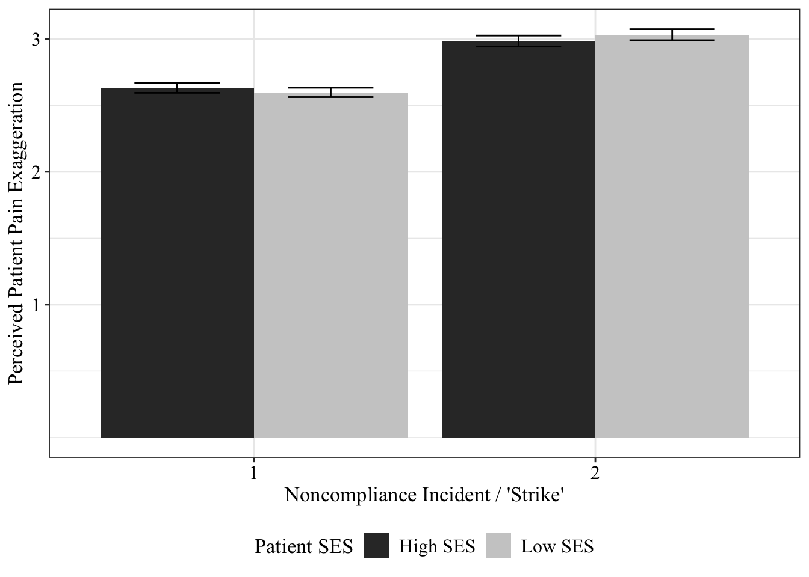
Type III Analysis of Variance Table with Satterthwaite's method
Sum Sq Mean Sq NumDF DenDF F value Pr(>F)
conditionSES 0.913 0.913 1 1048.20 1.9665 0.1611118
strike 66.718 66.718 1 643.59 143.6995 < 2.2e-16 ***
ladder_Self 0.167 0.167 1 638.94 0.3606 0.5483869
income_Self 0.501 0.501 1 639.13 1.0800 0.2990802
study 6.771 6.771 1 639.70 14.5834 0.0001471 ***
ed_Own 0.005 0.005 1 639.17 0.0106 0.9182055
conditionRace 2.120 2.120 1 639.61 4.5653 0.0330053 *
conditionSES:strike 1.619 1.619 1 643.59 3.4880 0.0622697 .
---
Signif. codes: 0 '***' 0.001 '**' 0.01 '*' 0.05 '.' 0.1 ' ' 1# Effect Size for ANOVA (Type III)
Parameter | Eta2 (partial) | 95% CI
---------------------------------------------------
conditionSES | 1.87e-03 | [0.00, 1.00]
strike | 0.18 | [0.14, 1.00]
ladder_Self | 5.64e-04 | [0.00, 1.00]
income_Self | 1.69e-03 | [0.00, 1.00]
study | 0.02 | [0.01, 1.00]
ed_Own | 1.65e-05 | [0.00, 1.00]
conditionRace | 7.09e-03 | [0.00, 1.00]
conditionSES:strike | 5.39e-03 | [0.00, 1.00]
- One-sided CIs: upper bound fixed at [1.00].$emmeans
conditionSES strike emmean SE df lower.CL upper.CL
High SES 1 2.66 0.0555 1005 2.55 2.77
Low SES 1 2.61 0.0542 1005 2.51 2.72
High SES 2 3.04 0.0556 1009 2.93 3.15
Low SES 2 3.14 0.0542 1005 3.03 3.25
Results are averaged over the levels of: conditionRace
Degrees-of-freedom method: kenward-roger
Confidence level used: 0.95
$contrasts
contrast estimate SE df t.ratio p.value
High SES strike1 - Low SES strike1 0.0439 0.0776 1004 0.566 0.9421
High SES strike1 - High SES strike2 -0.3840 0.0543 645 -7.066 <.0001
High SES strike1 - Low SES strike2 -0.4817 0.0776 1004 -6.206 <.0001
Low SES strike1 - High SES strike2 -0.4279 0.0777 1006 -5.506 <.0001
Low SES strike1 - Low SES strike2 -0.5257 0.0530 643 -9.925 <.0001
High SES strike2 - Low SES strike2 -0.0978 0.0777 1006 -1.258 0.5899
Results are averaged over the levels of: conditionRace
Degrees-of-freedom method: kenward-roger
P value adjustment: tukey method for comparing a family of 4 estimates Type III Analysis of Variance Table with Satterthwaite's method
Sum Sq Mean Sq NumDF DenDF F value Pr(>F)
conditionSES 0.964 0.964 1 1044.45 2.0754 0.149991
strike 66.747 66.747 1 643.45 143.7388 < 2.2e-16 ***
ladder_Self 0.257 0.257 1 633.79 0.5538 0.457061
income_Self 0.559 0.559 1 633.92 1.2037 0.273000
study 4.253 4.253 1 634.14 9.1583 0.002576 **
ed_Own 0.015 0.015 1 634.10 0.0326 0.856718
conditionRace 2.295 2.295 1 634.44 4.9424 0.026557 *
gender_Self 6.300 1.575 4 634.02 3.3918 0.009293 **
race_Self 0.015 0.015 1 634.59 0.0314 0.859349
conditionSES:strike 1.615 1.615 1 643.45 3.4779 0.062647 .
---
Signif. codes: 0 '***' 0.001 '**' 0.01 '*' 0.05 '.' 0.1 ' ' 1Type III Analysis of Variance Table with Satterthwaite's method
Sum Sq Mean Sq NumDF DenDF F value
conditionSES 0.954 0.954 1 1040.72 2.0481
strike 66.611 66.611 1 641.46 143.0301
conditionRace 0.378 0.378 1 1040.65 0.8113
ladder_Self 0.263 0.263 1 632.80 0.5637
income_Self 0.562 0.562 1 632.94 1.2057
study 4.278 4.278 1 633.16 9.1865
ed_Own 0.014 0.014 1 633.12 0.0295
gender_Self 6.289 1.572 4 633.05 3.3760
race_Self 0.010 0.010 1 633.61 0.0218
conditionSES:strike 1.599 1.599 1 641.46 3.4335
conditionSES:conditionRace 0.002 0.002 1 1043.14 0.0037
strike:conditionRace 0.033 0.033 1 641.46 0.0703
conditionSES:strike:conditionRace 0.025 0.025 1 641.46 0.0527
Pr(>F)
conditionSES 0.152697
strike < 2.2e-16 ***
conditionRace 0.367951
ladder_Self 0.453045
income_Self 0.272599
study 0.002538 **
ed_Own 0.863574
gender_Self 0.009549 **
race_Self 0.882799
conditionSES:strike 0.064345 .
conditionSES:conditionRace 0.951213
strike:conditionRace 0.790920
conditionSES:strike:conditionRace 0.818577
---
Signif. codes: 0 '***' 0.001 '**' 0.01 '*' 0.05 '.' 0.1 ' ' 1Giving Up
Type III Analysis of Variance Table with Satterthwaite's method
Sum Sq Mean Sq NumDF DenDF F value Pr(>F)
conditionSES 0.004 0.004 1 1037.81 0.0069 0.93382
strike 290.256 290.256 1 643.87 478.4753 < 2.2e-16 ***
ladder_Self 1.732 1.732 1 639.84 2.8547 0.09159 .
income_Self 0.624 0.624 1 639.53 1.0292 0.31072
study 10.745 10.745 1 639.75 17.7128 2.937e-05 ***
ed_Own 0.016 0.016 1 639.67 0.0265 0.87080
conditionRace 0.713 0.713 1 639.74 1.1746 0.27886
conditionSES:strike 0.040 0.040 1 643.87 0.0653 0.79846
---
Signif. codes: 0 '***' 0.001 '**' 0.01 '*' 0.05 '.' 0.1 ' ' 1# Effect Size for ANOVA (Type III)
Parameter | Eta2 (partial) | 95% CI
---------------------------------------------------
conditionSES | 6.65e-06 | [0.00, 1.00]
strike | 0.43 | [0.38, 1.00]
ladder_Self | 4.44e-03 | [0.00, 1.00]
income_Self | 1.61e-03 | [0.00, 1.00]
study | 0.03 | [0.01, 1.00]
ed_Own | 4.14e-05 | [0.00, 1.00]
conditionRace | 1.83e-03 | [0.00, 1.00]
conditionSES:strike | 1.01e-04 | [0.00, 1.00]
- One-sided CIs: upper bound fixed at [1.00].Type III Analysis of Variance Table with Satterthwaite's method
Sum Sq Mean Sq NumDF DenDF F value Pr(>F)
conditionSES 0.019 0.019 1 1035.05 0.0311 0.8599977
strike 290.293 290.293 1 643.85 478.5222 < 2.2e-16 ***
ladder_Self 1.813 1.813 1 634.87 2.9894 0.0842978 .
income_Self 0.878 0.878 1 634.44 1.4471 0.2294455
study 7.275 7.275 1 635.05 11.9916 0.0005703 ***
ed_Own 0.000 0.000 1 634.62 0.0000 0.9958571
conditionRace 0.871 0.871 1 634.70 1.4360 0.2312335
gender_Self 6.181 1.545 4 634.41 2.5472 0.0383912 *
race_Self 0.951 0.951 1 634.46 1.5668 0.2111295
conditionSES:strike 0.039 0.039 1 643.85 0.0647 0.7993707
---
Signif. codes: 0 '***' 0.001 '**' 0.01 '*' 0.05 '.' 0.1 ' ' 1Type III Analysis of Variance Table with Satterthwaite's method
Sum Sq Mean Sq NumDF DenDF F value
conditionSES 0.013 0.013 1 1032.67 0.0207
strike 290.005 290.005 1 641.82 478.6885
conditionRace 0.425 0.425 1 1032.60 0.7012
ladder_Self 1.800 1.800 1 633.89 2.9717
income_Self 0.878 0.878 1 633.44 1.4500
study 7.272 7.272 1 634.01 12.0037
ed_Own 0.000 0.000 1 633.59 0.0001
gender_Self 6.155 1.539 4 633.42 2.5400
race_Self 0.915 0.915 1 633.39 1.5106
conditionSES:strike 0.028 0.028 1 641.82 0.0470
conditionSES:conditionRace 0.074 0.074 1 1035.06 0.1217
strike:conditionRace 1.685 1.685 1 641.82 2.7818
conditionSES:strike:conditionRace 0.067 0.067 1 641.82 0.1109
Pr(>F)
conditionSES 0.8857014
strike < 2.2e-16 ***
conditionRace 0.4025617
ladder_Self 0.0852197 .
income_Self 0.2289712
study 0.0005668 ***
ed_Own 0.9913633
gender_Self 0.0388524 *
race_Self 0.2195039
conditionSES:strike 0.8284002
conditionSES:conditionRace 0.7272759
strike:conditionRace 0.0958293 .
conditionSES:strike:conditionRace 0.7392868
---
Signif. codes: 0 '***' 0.001 '**' 0.01 '*' 0.05 '.' 0.1 ' ' 1Pred. by Change in Perceptions
mod <- lm(givingUp_2 ~ lazy_2 + conditionSES + lazy_1 + income_Self + ladder_Self + ed_Own + conditionRace + study, data_wide)
summary(mod)
Call:
lm(formula = givingUp_2 ~ lazy_2 + conditionSES + lazy_1 + income_Self +
ladder_Self + ed_Own + conditionRace + study, data = data_wide)
Residuals:
Min 1Q Median 3Q Max
-2.7441 -0.6956 0.0333 0.7904 3.4257
Coefficients:
Estimate Std. Error t value Pr(>|t|)
(Intercept) 0.23061 0.26173 0.881 0.378599
lazy_2 0.41673 0.04508 9.245 < 2e-16 ***
conditionSESLow SES -0.13410 0.08563 -1.566 0.117852
lazy_1 0.23398 0.04746 4.930 1.05e-06 ***
income_Self -0.01545 0.02458 -0.628 0.529931
ladder_Self 0.04190 0.02416 1.734 0.083410 .
ed_Own 0.01156 0.06461 0.179 0.858080
conditionRaceWhite 0.02101 0.08538 0.246 0.805679
study 0.18084 0.04848 3.730 0.000209 ***
---
Signif. codes: 0 '***' 0.001 '**' 0.01 '*' 0.05 '.' 0.1 ' ' 1
Residual standard error: 1.069 on 632 degrees of freedom
(501 observations deleted due to missingness)
Multiple R-squared: 0.2886, Adjusted R-squared: 0.2795
F-statistic: 32.04 on 8 and 632 DF, p-value: < 2.2e-16effectsize::eta_squared(mod, partial=T)# Effect Size for ANOVA (Type I)
Parameter | Eta2 (partial) | 95% CI
---------------------------------------------
lazy_2 | 0.25 | [0.20, 1.00]
conditionSES | 3.66e-03 | [0.00, 1.00]
lazy_1 | 0.04 | [0.02, 1.00]
income_Self | 1.99e-04 | [0.00, 1.00]
ladder_Self | 3.76e-03 | [0.00, 1.00]
ed_Own | 1.50e-03 | [0.00, 1.00]
conditionRace | 3.35e-05 | [0.00, 1.00]
study | 0.02 | [0.01, 1.00]
- One-sided CIs: upper bound fixed at [1.00].mod <- lm(givingUp_2 ~ honest_2 + conditionSES + honest_1 + income_Self + ladder_Self + ed_Own + conditionRace + study, data_wide)
summary(mod)
Call:
lm(formula = givingUp_2 ~ honest_2 + conditionSES + honest_1 +
income_Self + ladder_Self + ed_Own + conditionRace + study,
data = data_wide)
Residuals:
Min 1Q Median 3Q Max
-2.64822 -0.95141 0.02432 1.07641 2.93333
Coefficients:
Estimate Std. Error t value Pr(>|t|)
(Intercept) 2.6235765 0.3400211 7.716 4.73e-14 ***
honest_2 -0.1250314 0.0528679 -2.365 0.018334 *
conditionSESLow SES -0.0006622 0.0992583 -0.007 0.994679
honest_1 -0.0281806 0.0685243 -0.411 0.681029
income_Self -0.0399416 0.0286664 -1.393 0.164014
ladder_Self 0.0741025 0.0283477 2.614 0.009162 **
ed_Own -0.0148296 0.0750857 -0.198 0.843498
conditionRaceWhite 0.1472609 0.0990013 1.487 0.137393
study 0.2194818 0.0570847 3.845 0.000133 ***
---
Signif. codes: 0 '***' 0.001 '**' 0.01 '*' 0.05 '.' 0.1 ' ' 1
Residual standard error: 1.237 on 629 degrees of freedom
(504 observations deleted due to missingness)
Multiple R-squared: 0.04833, Adjusted R-squared: 0.03622
F-statistic: 3.993 on 8 and 629 DF, p-value: 0.000124effectsize::eta_squared(mod, partial=T)# Effect Size for ANOVA (Type I)
Parameter | Eta2 (partial) | 95% CI
---------------------------------------------
honest_2 | 0.01 | [0.00, 1.00]
conditionSES | 4.66e-05 | [0.00, 1.00]
honest_1 | 6.48e-05 | [0.00, 1.00]
income_Self | 1.27e-03 | [0.00, 1.00]
ladder_Self | 8.66e-03 | [0.00, 1.00]
ed_Own | 5.27e-04 | [0.00, 1.00]
conditionRace | 3.21e-03 | [0.00, 1.00]
study | 0.02 | [0.01, 1.00]
- One-sided CIs: upper bound fixed at [1.00].mod <- lm(givingUp_2 ~ exaggerate_2 * conditionSES + exaggerate_1 + income_Self + ladder_Self + ed_Own + conditionRace + study, data_wide)
summary(mod)
Call:
lm(formula = givingUp_2 ~ exaggerate_2 * conditionSES + exaggerate_1 +
income_Self + ladder_Self + ed_Own + conditionRace + study,
data = data_wide)
Residuals:
Min 1Q Median 3Q Max
-2.8850 -0.8612 0.0578 0.8782 3.1631
Coefficients:
Estimate Std. Error t value Pr(>|t|)
(Intercept) 0.89426 0.31401 2.848 0.00454 **
exaggerate_2 0.33230 0.06716 4.948 9.62e-07 ***
conditionSESLow SES -0.15317 0.27796 -0.551 0.58179
exaggerate_1 0.12071 0.06132 1.968 0.04945 *
income_Self -0.02207 0.02666 -0.828 0.40803
ladder_Self 0.06000 0.02622 2.289 0.02243 *
ed_Own -0.00228 0.07020 -0.032 0.97410
conditionRaceWhite 0.08191 0.09242 0.886 0.37581
study 0.11917 0.05320 2.240 0.02544 *
exaggerate_2:conditionSESLow SES 0.05267 0.08473 0.622 0.53445
---
Signif. codes: 0 '***' 0.001 '**' 0.01 '*' 0.05 '.' 0.1 ' ' 1
Residual standard error: 1.164 on 634 degrees of freedom
(498 observations deleted due to missingness)
Multiple R-squared: 0.1579, Adjusted R-squared: 0.1459
F-statistic: 13.21 on 9 and 634 DF, p-value: < 2.2e-16effectsize::eta_squared(mod, partial=T)# Effect Size for ANOVA (Type I)
Parameter | Eta2 (partial) | 95% CI
---------------------------------------------------------
exaggerate_2 | 0.14 | [0.10, 1.00]
conditionSES | 2.61e-05 | [0.00, 1.00]
exaggerate_1 | 5.84e-03 | [0.00, 1.00]
income_Self | 3.18e-05 | [0.00, 1.00]
ladder_Self | 7.05e-03 | [0.00, 1.00]
ed_Own | 2.45e-04 | [0.00, 1.00]
conditionRace | 1.04e-03 | [0.00, 1.00]
study | 7.81e-03 | [0.00, 1.00]
exaggerate_2:conditionSES | 6.09e-04 | [0.00, 1.00]
- One-sided CIs: upper bound fixed at [1.00].data_wide$honest_change <- data_wide$honest_1 - data_wide$honest_2
data_wide$honIncrease <- case_when(data_wide$honest_change >= 1 ~ "1",
data_wide$honest_change == 0 ~ "0",
TRUE ~ "-1")
ggplot(data_wide, aes(honest_change, givingUp_2)) +
geom_jitter(aes(colour=factor(honIncrease)), alpha=0.5) +
stat_smooth(method="lm", color="#003f5c") +
scale_x_continuous(breaks=c(-4:4)) +
labs(x = "Change in Perceived Patient Honesty from Strike 1 to Strike 2",
y = "Desire to 'Give Up' after Strike 2",
title = "\U0394 Honesty \U2192 Giving Up",
subtitle = "Meta-Analysis") +
guides(colour=guide_legend(title="Direction\nof Change")) +
scale_color_manual(values=c("#B3DFFF", "#768fe8", "#0a7cfc"), labels=c("Decrease", "No Change", "Increase")) +
theme_perez() +
theme(legend.position="bottom")`geom_smooth()` using formula = 'y ~ x'Warning: Removed 31 rows containing non-finite outside the scale range
(`stat_smooth()`).Warning: Removed 31 rows containing missing values or values outside the scale range
(`geom_point()`).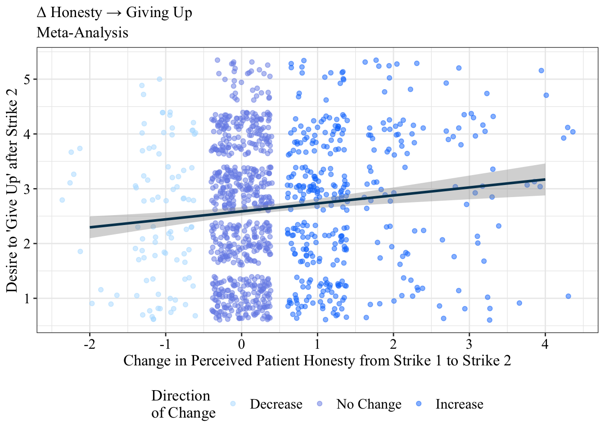
ggplot(data_wide, aes(honest_change, givingUp_2, fill=conditionSES)) +
geom_jitter() +
stat_smooth(method="lm") +
scale_x_continuous(breaks=c(-2:4)) +
labs(x = "Decrease in Perceived Patient Honesty",
y = "Desire to 'Give Up' after Strike 2") +
theme_perez() `geom_smooth()` using formula = 'y ~ x'Warning: Removed 31 rows containing non-finite outside the scale range
(`stat_smooth()`).
Removed 31 rows containing missing values or values outside the scale range
(`geom_point()`).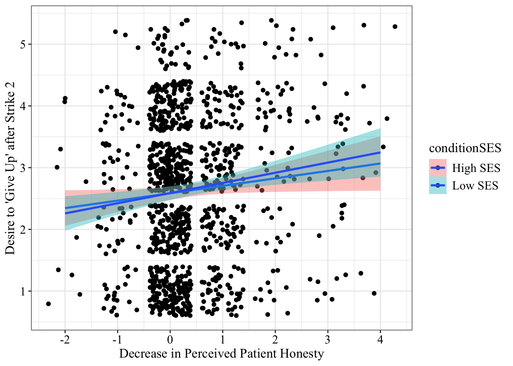
data_wide$exag_change <- data_wide$exaggerate_2 - data_wide$exaggerate_1
data_wide$exagIncrease <- case_when(data_wide$exag_change >= 1 ~ "1",
data_wide$exag_change == 0 ~ "0",
TRUE ~ "-1")
ggplot(data_wide, aes(exag_change, givingUp_2)) +
geom_jitter(aes(colour=factor(exagIncrease)), alpha=0.5) +
stat_smooth(method="lm", color="#003f5c") +
scale_x_continuous(breaks=c(-4:4)) +
labs(x = "Change in Perceived Pain Exaggeration from Strike 1 to Strike 2",
y = "Desire to 'Give Up' after Strike 2",
title = "\U0394 Pain Exaggeration \U2192 Giving Up",
subtitle = "Meta-Analysis") +
guides(colour=guide_legend(title="Direction\nof Change")) +
scale_color_manual(values=c("#B3DFFF", "#768fe8", "#0a7cfc"), labels=c("Decrease", "No Change", "Increase")) +
theme_perez() +
theme(legend.position="bottom")`geom_smooth()` using formula = 'y ~ x'Warning: Removed 22 rows containing non-finite outside the scale range
(`stat_smooth()`).Warning: Removed 22 rows containing missing values or values outside the scale range
(`geom_point()`).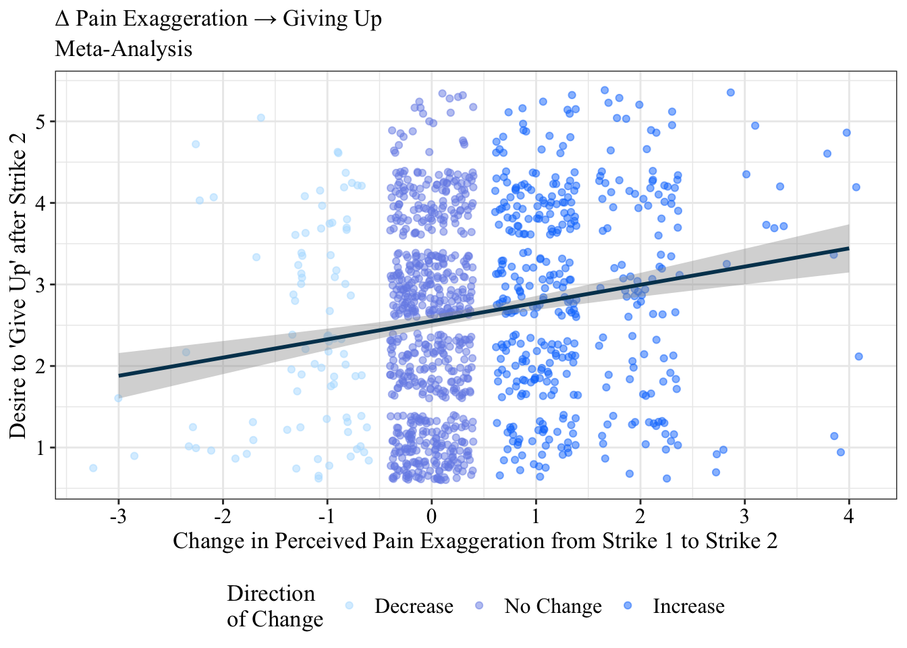
ggplot(data_wide, aes(exag_change, givingUp_2, fill=conditionSES)) +
geom_jitter() +
stat_smooth(method="lm") +
scale_x_continuous(breaks=c(-3:4)) +
labs(x = "Increase in Perceived Patient Pain Exaggeration",
y = "Desire to 'Give Up' after Strike 2") +
theme_perez() `geom_smooth()` using formula = 'y ~ x'Warning: Removed 22 rows containing non-finite outside the scale range
(`stat_smooth()`).
Removed 22 rows containing missing values or values outside the scale range
(`geom_point()`).
data_wide$lazy_change <- data_wide$lazy_2 - data_wide$lazy_1
data_wide$lazyIncrease <- case_when(data_wide$lazy_change >= 1 ~ "1",
data_wide$lazy_change == 0 ~ "0",
TRUE ~ "-1")
ggplot(data_wide, aes(lazy_change, givingUp_2)) +
geom_jitter(aes(colour=factor(lazyIncrease)), alpha=0.5) +
stat_smooth(method="lm", color="#003f5c") +
scale_x_continuous(breaks=c(-4:4)) +
labs(x = "Change in Perceived Patient Laziness from Strike 1 to Strike 2",
y = "Desire to 'Give Up' after Strike 2",
title = "\U0394 Laziness \U2192 Giving Up",
subtitle = "Meta-Analysis") +
guides(colour=guide_legend(title="Direction\nof Change")) +
scale_color_manual(values=c("#B3DFFF", "#768fe8", "#0a7cfc"), labels=c("Decrease", "No Change", "Increase")) +
theme_perez() +
theme(legend.position="bottom")`geom_smooth()` using formula = 'y ~ x'Warning: Removed 27 rows containing non-finite outside the scale range
(`stat_smooth()`).Warning: Removed 27 rows containing missing values or values outside the scale range
(`geom_point()`).
ggplot(data_wide, aes(lazy_change, givingUp_2, fill=conditionSES)) +
geom_jitter() +
stat_smooth(method="lm") +
scale_x_continuous(breaks=c(-3:4)) +
labs(x = "Change in Perceived Patient Laziness from Strike 1 to Strike 2",
y = "Desire to 'Give Up' after Strike 2") +
theme_perez() +
theme(legend.position="bottom")`geom_smooth()` using formula = 'y ~ x'Warning: Removed 27 rows containing non-finite outside the scale range
(`stat_smooth()`).
Removed 27 rows containing missing values or values outside the scale range
(`geom_point()`).
Treatment Decisions
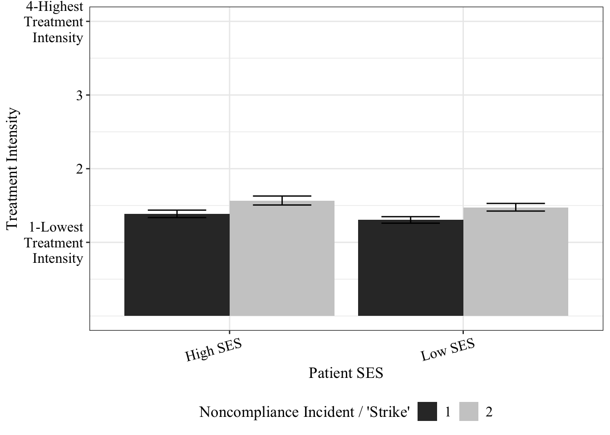
Type III Analysis of Variance Table with Satterthwaite's method
Sum Sq Mean Sq NumDF DenDF F value Pr(>F)
conditionSES 1.6953 1.6953 1 638.66 7.7669 0.0054793 **
strike 13.5223 13.5223 1 643.98 61.9503 1.496e-14 ***
study 2.7543 2.7543 1 638.29 12.6186 0.0004101 ***
income_Self 0.1880 0.1880 1 638.28 0.8611 0.3537711
ladder_Self 0.2148 0.2148 1 639.05 0.9840 0.3216007
conditionRace 0.0121 0.0121 1 638.68 0.0555 0.8137926
ed_Own 0.0133 0.0133 1 638.45 0.0608 0.8053193
---
Signif. codes: 0 '***' 0.001 '**' 0.01 '*' 0.05 '.' 0.1 ' ' 1# Effect Size for ANOVA (Type III)
Parameter | Eta2 (partial) | 95% CI
---------------------------------------------
conditionSES | 0.01 | [0.00, 1.00]
strike | 0.09 | [0.06, 1.00]
study | 0.02 | [0.01, 1.00]
income_Self | 1.35e-03 | [0.00, 1.00]
ladder_Self | 1.54e-03 | [0.00, 1.00]
conditionRace | 8.69e-05 | [0.00, 1.00]
ed_Own | 9.52e-05 | [0.00, 1.00]
- One-sided CIs: upper bound fixed at [1.00].$emmeans
conditionSES emmean SE df lower.CL upper.CL
High SES 1.71 0.0360 639 1.64 1.78
Low SES 1.57 0.0352 639 1.50 1.63
Results are averaged over the levels of: strike, conditionRace
Degrees-of-freedom method: kenward-roger
Confidence level used: 0.95
$contrasts
contrast estimate SE df t.ratio p.value
High SES - Low SES 0.141 0.0505 639 2.787 0.0055
Results are averaged over the levels of: strike, conditionRace
Degrees-of-freedom method: kenward-roger $emmeans
strike emmean SE df lower.CL upper.CL
1 1.53 0.0283 958 1.48 1.59
2 1.74 0.0283 959 1.68 1.79
Results are averaged over the levels of: conditionSES, conditionRace
Degrees-of-freedom method: kenward-roger
Confidence level used: 0.95
$contrasts
contrast estimate SE df t.ratio p.value
strike1 - strike2 -0.205 0.026 644 -7.871 <.0001
Results are averaged over the levels of: conditionSES, conditionRace
Degrees-of-freedom method: kenward-roger Type III Analysis of Variance Table with Satterthwaite's method
Sum Sq Mean Sq NumDF DenDF F value Pr(>F)
conditionSES 1.6560 1.6560 1 634.67 7.5869 0.0060478 **
strike 13.5231 13.5231 1 643.99 61.9549 1.493e-14 ***
study 2.6942 2.6942 1 634.28 12.3431 0.0004741 ***
income_Self 0.1815 0.1815 1 634.29 0.8315 0.3621831
ladder_Self 0.1851 0.1851 1 635.07 0.8478 0.3575278
conditionRace 0.0123 0.0123 1 634.69 0.0563 0.8124640
ed_Own 0.0159 0.0159 1 634.49 0.0727 0.7875840
gender_Self 0.1179 0.0295 4 634.30 0.1351 0.9693982
---
Signif. codes: 0 '***' 0.001 '**' 0.01 '*' 0.05 '.' 0.1 ' ' 1 1 2 3 4
1.748141 1.535565 1.556180 1.151709 Additional Analyses
Motivated
Type III Analysis of Variance Table with Satterthwaite's method
Sum Sq Mean Sq NumDF DenDF F value Pr(>F)
conditionSES 0.263 0.263 1 1098.13 0.6066 0.43624
strike 50.905 50.905 1 644.01 117.2216 < 2e-16 ***
ladder_Self 0.174 0.174 1 641.18 0.4017 0.52644
income_Self 1.291 1.291 1 641.49 2.9738 0.08511 .
study 2.749 2.749 1 642.56 6.3310 0.01211 *
ed_Own 0.264 0.264 1 641.99 0.6083 0.43571
conditionSES:strike 0.070 0.070 1 644.02 0.1607 0.68863
---
Signif. codes: 0 '***' 0.001 '**' 0.01 '*' 0.05 '.' 0.1 ' ' 1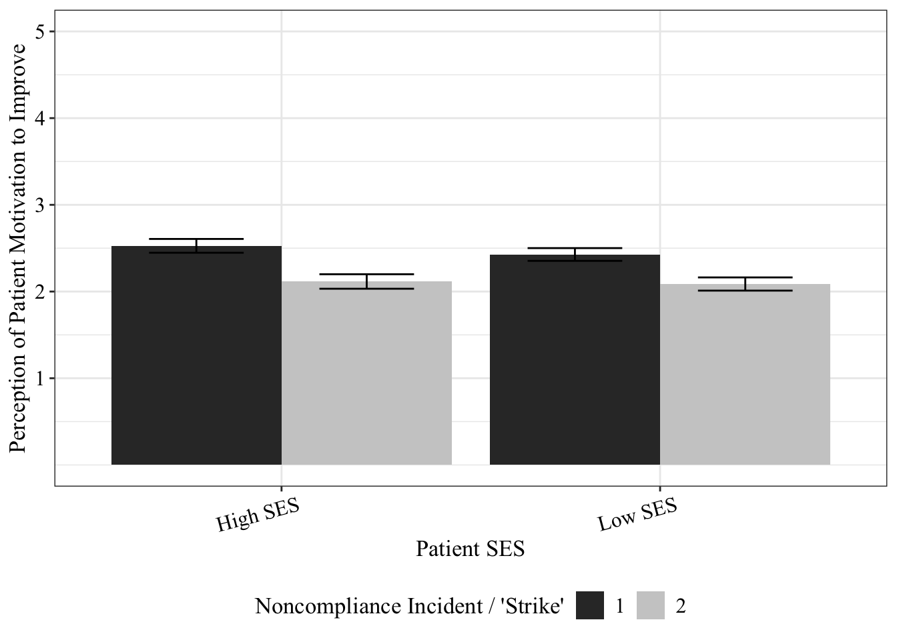
First Impression Severity
modSevere <- lm(severe ~ conditionSES + study + income_Self + ladder_Self + ed_Own, data=data_wide)
anova(modSevere)Analysis of Variance Table
Response: severe
Df Sum Sq Mean Sq F value Pr(>F)
conditionSES 1 0.04 0.042 0.0518 0.8201
study 1 42.06 42.062 51.4846 2.004e-12 ***
income_Self 1 1.12 1.118 1.3688 0.2424
ladder_Self 1 0.34 0.336 0.4110 0.5217
ed_Own 1 0.15 0.152 0.1864 0.6661
Residuals 640 522.87 0.817
---
Signif. codes: 0 '***' 0.001 '**' 0.01 '*' 0.05 '.' 0.1 ' ' 1ggplot(data=data, aes(conditionSES, severe)) +
geom_bar(stat="summary", fun.y="mean", position="dodge") +
facet_wrap(~study) +
stat_sum_df("mean_cl_boot", geom = "errorbar", position= position_dodge(.9), conf.int=.68, width=0.2) +
expand_limits(y=c(1:5)) +
theme_perez() +
scale_fill_grey() +
xlab("Condition") +
ylab("Initial Perceived Pain Severity") +
theme(legend.position="bottom")Warning in geom_bar(stat = "summary", fun.y = "mean", position = "dodge"):
Ignoring unknown parameters: `fun.y`Warning: Duplicated aesthetics after name standardisation: widthWarning in stat_summary(fun.data = fun, colour = "black", geom = geom, width =
0.5, : Ignoring unknown parameters: `conf.int`Warning: Removed 24 rows containing non-finite outside the scale range
(`stat_summary()`).No summary function supplied, defaulting to `mean_se()`
No summary function supplied, defaulting to `mean_se()`
No summary function supplied, defaulting to `mean_se()`
No summary function supplied, defaulting to `mean_se()`Warning: Removed 24 rows containing non-finite outside the scale range
(`stat_summary()`).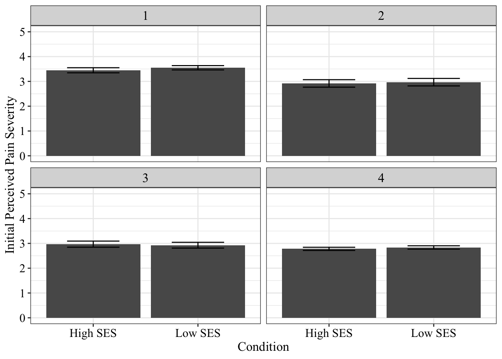
Important that Health Improves
Type III Analysis of Variance Table with Satterthwaite's method
Sum Sq Mean Sq NumDF DenDF F value Pr(>F)
conditionSES 0.1397 0.1397 1 1157.93 0.5739 0.448872
strike 16.6744 16.6744 1 643.40 68.5045 7.312e-16 ***
ladder_Self 0.4000 0.4000 1 640.98 1.6435 0.200312
income_Self 0.0041 0.0041 1 640.24 0.0167 0.897351
study 2.4576 2.4576 1 640.81 10.0968 0.001557 **
ed_Own 0.4945 0.4945 1 640.71 2.0316 0.154543
conditionSES:strike 0.0001 0.0001 1 643.40 0.0003 0.986087
---
Signif. codes: 0 '***' 0.001 '**' 0.01 '*' 0.05 '.' 0.1 ' ' 1Type III Analysis of Variance Table with Satterthwaite's method
Sum Sq Mean Sq NumDF DenDF F value Pr(>F)
conditionRace 0.6184 0.6184 1 638.62 2.5408 0.11143
conditionSES 0.1589 0.1589 1 1153.33 0.6527 0.41931
strike 16.6698 16.6698 1 643.49 68.4910 7.356e-16 ***
ladder_Self 0.3631 0.3631 1 638.98 1.4917 0.22241
race_Self 2.0399 2.0399 1 638.31 8.3814 0.00392 **
income_Self 0.0301 0.0301 1 638.30 0.1238 0.72509
study 1.0909 1.0909 1 638.72 4.4822 0.03464 *
ed_Own 0.6187 0.6187 1 638.76 2.5420 0.11135
conditionSES:strike 0.0001 0.0001 1 643.49 0.0003 0.98516
---
Signif. codes: 0 '***' 0.001 '**' 0.01 '*' 0.05 '.' 0.1 ' ' 1Type III Analysis of Variance Table with Satterthwaite's method
Sum Sq Mean Sq NumDF DenDF F value Pr(>F)
conditionSES 0.4980 0.4980 1 638.82 2.0461 0.15309
conditionRace 0.2496 0.2496 1 1153.99 1.0255 0.31143
strike 16.6774 16.6774 1 643.51 68.5242 7.245e-16 ***
ladder_Self 0.3630 0.3630 1 638.98 1.4915 0.22243
race_Self 2.0399 2.0399 1 638.31 8.3817 0.00392 **
income_Self 0.0301 0.0301 1 638.30 0.1237 0.72513
study 1.0909 1.0909 1 638.71 4.4824 0.03463 *
ed_Own 0.6186 0.6186 1 638.76 2.5416 0.11138
conditionRace:strike 0.0033 0.0033 1 643.51 0.0135 0.90767
---
Signif. codes: 0 '***' 0.001 '**' 0.01 '*' 0.05 '.' 0.1 ' ' 1Type III Analysis of Variance Table with Satterthwaite's method
Sum Sq Mean Sq NumDF DenDF F value Pr(>F)
conditionSES 0.4972 0.4972 1 638.83 2.0461 0.15309
conditionRace 0.6174 0.6174 1 638.63 2.5408 0.11143
strike 16.6752 16.6752 1 644.52 68.6196 6.917e-16 ***
ladder_Self 0.3625 0.3625 1 638.98 1.4917 0.22241
race_Self 2.0368 2.0368 1 638.31 8.3815 0.00392 **
income_Self 0.0301 0.0301 1 638.30 0.1238 0.72509
study 1.0892 1.0892 1 638.72 4.4821 0.03464 *
ed_Own 0.6177 0.6177 1 638.76 2.5420 0.11135
---
Signif. codes: 0 '***' 0.001 '**' 0.01 '*' 0.05 '.' 0.1 ' ' 1Should Have Been Clearer
Type III Analysis of Variance Table with Satterthwaite's method
Sum Sq Mean Sq NumDF DenDF F value Pr(>F)
conditionSES 0.002 0.002 1 407.78 0.0034 0.9532
strike 68.126 68.126 1 254.40 99.9589 <2e-16 ***
ladder_Self 0.883 0.883 1 252.98 1.2954 0.2561
income_Self 0.448 0.448 1 253.64 0.6572 0.4183
ed_Own 0.858 0.858 1 252.95 1.2589 0.2629
conditionSES:strike 0.408 0.408 1 254.39 0.5984 0.4399
study
---
Signif. codes: 0 '***' 0.001 '**' 0.01 '*' 0.05 '.' 0.1 ' ' 1Type III Analysis of Variance Table with Satterthwaite's method
Sum Sq Mean Sq NumDF DenDF F value Pr(>F)
conditionRace 4.598 4.598 1 251.06 6.7484 0.009937 **
conditionSES 0.007 0.007 1 405.72 0.0110 0.916548
strike 68.305 68.305 1 254.52 100.2487 < 2.2e-16 ***
ladder_Self 1.225 1.225 1 251.08 1.7974 0.181242
race_Self 0.029 0.029 1 250.12 0.0419 0.837884
income_Self 0.586 0.586 1 251.84 0.8598 0.354693
ed_Own 1.034 1.034 1 251.08 1.5180 0.219069
conditionSES:strike 0.413 0.413 1 254.51 0.6055 0.437198
study
---
Signif. codes: 0 '***' 0.001 '**' 0.01 '*' 0.05 '.' 0.1 ' ' 1Type III Analysis of Variance Table with Satterthwaite's method
Sum Sq Mean Sq NumDF DenDF F value Pr(>F)
conditionSES 1.676 1.676 1 250.96 2.4619 0.1179
conditionRace 0.104 0.104 1 406.02 0.1535 0.6955
strike 67.943 67.943 1 254.61 99.8255 <2e-16 ***
ladder_Self 1.232 1.232 1 251.18 1.8101 0.1797
race_Self 0.027 0.027 1 250.22 0.0403 0.8410
income_Self 0.571 0.571 1 251.94 0.8387 0.3607
ed_Own 1.039 1.039 1 251.17 1.5269 0.2177
conditionRace:strike 0.737 0.737 1 254.61 1.0823 0.2992
study
---
Signif. codes: 0 '***' 0.001 '**' 0.01 '*' 0.05 '.' 0.1 ' ' 1Type III Analysis of Variance Table with Satterthwaite's method
Sum Sq Mean Sq NumDF DenDF F value Pr(>F)
conditionSES 1.671 1.671 1 250.91 2.4551 0.11841
conditionRace 4.588 4.588 1 251.11 6.7425 0.00997 **
strike 68.164 68.164 1 255.55 100.1624 < 2e-16 ***
ladder_Self 1.227 1.227 1 251.13 1.8029 0.18058
race_Self 0.028 0.028 1 250.17 0.0412 0.83922
income_Self 0.579 0.579 1 251.88 0.8508 0.35721
ed_Own 1.036 1.036 1 251.13 1.5218 0.21851
study
---
Signif. codes: 0 '***' 0.001 '**' 0.01 '*' 0.05 '.' 0.1 ' ' 1Attributions for Noncompliant Behavior

Type III Analysis of Variance Table with Satterthwaite's method
Sum Sq Mean Sq NumDF DenDF F value Pr(>F)
conditionRace 3.341 3.341 1 639.80 3.0867 0.07941 .
conditionSES 0.613 0.613 1 930.46 0.5661 0.45201
strike 172.979 172.979 1 645.57 159.8328 < 2e-16 ***
ladder_Self 6.791 6.791 1 639.95 6.2747 0.01249 *
race_Self 0.729 0.729 1 639.51 0.6735 0.41215
income_Self 0.057 0.057 1 639.49 0.0528 0.81839
study 6.644 6.644 1 639.93 6.1391 0.01348 *
politics_Self 1.332 1.332 1 639.50 1.2309 0.26766
conditionSES:strike 0.512 0.512 1 645.57 0.4730 0.49184
---
Signif. codes: 0 '***' 0.001 '**' 0.01 '*' 0.05 '.' 0.1 ' ' 1Type III Analysis of Variance Table with Satterthwaite's method
Sum Sq Mean Sq NumDF DenDF F value Pr(>F)
conditionSES 0.101 0.101 1 639.99 0.0934 0.76001
conditionRace 1.399 1.399 1 930.91 1.2917 0.25604
strike 173.652 173.652 1 645.58 160.3718 < 2e-16 ***
ladder_Self 6.790 6.790 1 639.97 6.2707 0.01252 *
race_Self 0.729 0.729 1 639.53 0.6731 0.41229
income_Self 0.057 0.057 1 639.51 0.0529 0.81824
study 6.643 6.643 1 639.95 6.1353 0.01351 *
politics_Self 1.333 1.333 1 639.52 1.2314 0.26755
conditionRace:strike 0.185 0.185 1 645.58 0.1709 0.67949
---
Signif. codes: 0 '***' 0.001 '**' 0.01 '*' 0.05 '.' 0.1 ' ' 1Type III Analysis of Variance Table with Satterthwaite's method
Sum Sq Mean Sq NumDF DenDF F value Pr(>F)
conditionSES 0.626 0.626 1 928.17 0.5776 0.44744
conditionRace 1.434 1.434 1 928.75 1.3228 0.25038
strike 60.101 60.101 1 704.51 55.4262 2.839e-13
ladder_Self 6.773 6.773 1 639.00 6.2460 0.01270
race_Self 0.673 0.673 1 640.75 0.6210 0.43095
income_Self 0.056 0.056 1 638.52 0.0520 0.81968
study 6.715 6.715 1 639.65 6.1923 0.01308
politics_Self 1.281 1.281 1 639.61 1.1817 0.27742
conditionSES:conditionRace:strike 0.807 0.269 3 747.79 0.2480 0.86281
conditionSES
conditionRace
strike ***
ladder_Self *
race_Self
income_Self
study *
politics_Self
conditionSES:conditionRace:strike
---
Signif. codes: 0 '***' 0.001 '**' 0.01 '*' 0.05 '.' 0.1 ' ' 1Perceived Likelihood of Health Insurance
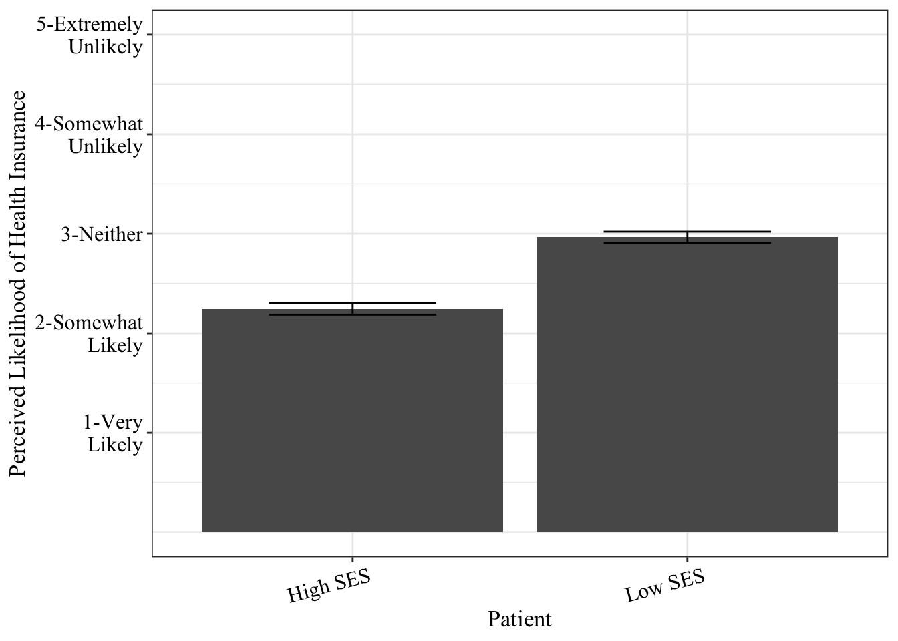
Analysis of Variance Table
Response: insurance_Patient
Df Sum Sq Mean Sq F value Pr(>F)
conditionSES 1 271.62 271.621 278.7629 < 2e-16 ***
conditionRace 1 0.37 0.373 0.3827 0.53623
ladder_Self 1 1.59 1.595 1.6368 0.20089
race_Self 1 0.04 0.041 0.0417 0.83830
income_Self 1 1.19 1.188 1.2197 0.26953
study 1 3.91 3.913 4.0163 0.04519 *
Residuals 2209 2152.40 0.974
---
Signif. codes: 0 '***' 0.001 '**' 0.01 '*' 0.05 '.' 0.1 ' ' 1Analysis of Variance Table
Response: insurance_Patient
Df Sum Sq Mean Sq F value Pr(>F)
lazy 1 2.36 2.362 2.4244 0.11960
conditionSES 1 268.74 268.737 275.7862 < 2e-16 ***
conditionRace 1 0.33 0.329 0.3373 0.56144
ladder_Self 1 1.53 1.531 1.5713 0.21016
race_Self 1 0.11 0.105 0.1082 0.74227
income_Self 1 1.21 1.208 1.2401 0.26558
study 1 4.11 4.105 4.2129 0.04024 *
lazy:conditionSES 1 0.25 0.247 0.2540 0.61436
Residuals 2198 2141.82 0.974
---
Signif. codes: 0 '***' 0.001 '**' 0.01 '*' 0.05 '.' 0.1 ' ' 1Analysis of Variance Table
Response: insurance_Patient
Df Sum Sq Mean Sq F value Pr(>F)
honest 1 11.49 11.492 11.7983 0.0006039 ***
conditionSES 1 265.98 265.977 273.0758 < 2.2e-16 ***
conditionRace 1 0.28 0.280 0.2877 0.5917827
ladder_Self 1 1.89 1.888 1.9387 0.1639514
race_Self 1 0.02 0.022 0.0224 0.8810699
income_Self 1 0.68 0.678 0.6965 0.4040609
study 1 5.58 5.579 5.7281 0.0167791 *
honest:conditionSES 1 0.13 0.133 0.1364 0.7119505
Residuals 2195 2137.94 0.974
---
Signif. codes: 0 '***' 0.001 '**' 0.01 '*' 0.05 '.' 0.1 ' ' 1Analysis of Variance Table
Response: insurance_Patient
Df Sum Sq Mean Sq F value Pr(>F)
exaggerate 1 9.90 9.904 10.1810 0.001439 **
conditionSES 1 269.35 269.347 276.8755 < 2.2e-16 ***
conditionRace 1 0.45 0.451 0.4631 0.496229
ladder_Self 1 2.00 2.002 2.0579 0.151556
race_Self 1 0.11 0.108 0.1110 0.739011
income_Self 1 0.81 0.809 0.8318 0.361843
study 1 3.49 3.492 3.5898 0.058266 .
exaggerate:conditionSES 1 0.65 0.649 0.6676 0.413962
Residuals 2203 2143.10 0.973
---
Signif. codes: 0 '***' 0.001 '**' 0.01 '*' 0.05 '.' 0.1 ' ' 1Analysis of Variance Table
Response: insurance_Patient
Df Sum Sq Mean Sq F value Pr(>F)
givingUp 1 1.31 1.311 1.3449 0.24629
conditionSES 1 267.93 267.930 274.9647 < 2e-16 ***
conditionRace 1 0.30 0.304 0.3123 0.57631
ladder_Self 1 1.92 1.920 1.9701 0.16058
race_Self 1 0.05 0.054 0.0558 0.81321
income_Self 1 1.05 1.048 1.0756 0.29979
study 1 4.22 4.220 4.3306 0.03755 *
givingUp:conditionSES 1 0.22 0.219 0.2246 0.63559
Residuals 2203 2146.64 0.974
---
Signif. codes: 0 '***' 0.001 '**' 0.01 '*' 0.05 '.' 0.1 ' ' 1
Welch Two Sample t-test
data: insurance_Patient by conditionSES
t = -17.271, df = 2248, p-value < 2.2e-16
alternative hypothesis: true difference in means between group High SES and group Low SES is not equal to 0
95 percent confidence interval:
-0.8017056 -0.6382122
sample estimates:
mean in group High SES mean in group Low SES
2.244643 2.964602
Welch Two Sample t-test
data: insurance_Patient by conditionRace
t = 0.66028, df = 1289.4, p-value = 0.5092
alternative hypothesis: true difference in means between group Black and group White is not equal to 0
95 percent confidence interval:
-0.06155181 0.12400403
sample estimates:
mean in group Black mean in group White
2.628483 2.597257 Perceived Health Literacy
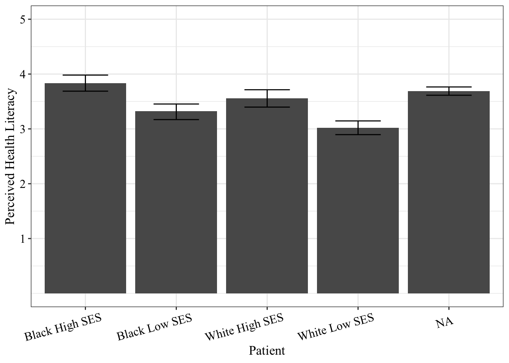
Analysis of Variance Table
Response: healthLit_Patient
Df Sum Sq Mean Sq F value Pr(>F)
conditionSES 1 89.03 89.032 49.6333 3.010e-12 ***
conditionRace 1 28.78 28.777 16.0425 6.548e-05 ***
ladder_Self 1 2.23 2.229 1.2428 0.265138
race_Self 1 12.19 12.189 6.7949 0.009247 **
income_Self 1 2.10 2.100 1.1710 0.279404
study 1 8.21 8.205 4.5742 0.032645 *
ed_Own 1 7.66 7.655 4.2676 0.039045 *
Residuals 1288 2310.40 1.794
---
Signif. codes: 0 '***' 0.001 '**' 0.01 '*' 0.05 '.' 0.1 ' ' 1Analysis of Variance Table
Response: healthLit_Patient
Df Sum Sq Mean Sq F value Pr(>F)
lazy 1 66.90 66.905 37.9447 9.730e-10 ***
conditionSES 1 77.88 77.879 44.1687 4.448e-11 ***
conditionRace 1 21.39 21.390 12.1316 0.0005125 ***
ladder_Self 1 1.47 1.466 0.8312 0.3620989
race_Self 1 8.53 8.530 4.8378 0.0280213 *
income_Self 1 1.12 1.125 0.6379 0.4246286
study 1 7.05 7.054 4.0005 0.0456972 *
ed_Own 1 7.33 7.330 4.1572 0.0416628 *
lazy:conditionSES 1 1.59 1.588 0.9006 0.3427869
Residuals 1279 2255.15 1.763
---
Signif. codes: 0 '***' 0.001 '**' 0.01 '*' 0.05 '.' 0.1 ' ' 1Analysis of Variance Table
Response: healthLit_Patient
Df Sum Sq Mean Sq F value Pr(>F)
honest 1 1.11 1.109 0.6193 0.43146
conditionSES 1 90.43 90.428 50.4897 1.987e-12 ***
conditionRace 1 30.08 30.079 16.7946 4.428e-05 ***
ladder_Self 1 1.77 1.766 0.9861 0.32089
race_Self 1 10.46 10.459 5.8395 0.01581 *
income_Self 1 2.09 2.086 1.1644 0.28075
study 1 8.46 8.458 4.7225 0.02995 *
ed_Own 1 7.88 7.877 4.3978 0.03618 *
honest:conditionSES 1 0.49 0.491 0.2743 0.60058
Residuals 1276 2285.34 1.791
---
Signif. codes: 0 '***' 0.001 '**' 0.01 '*' 0.05 '.' 0.1 ' ' 1Analysis of Variance Table
Response: healthLit_Patient
Df Sum Sq Mean Sq F value Pr(>F)
exaggerate 1 34.53 34.532 19.5710 1.051e-05 ***
conditionSES 1 92.11 92.111 52.2043 8.559e-13 ***
conditionRace 1 23.61 23.614 13.3834 0.0002642 ***
ladder_Self 1 3.34 3.337 1.8911 0.1693169
race_Self 1 11.95 11.947 6.7710 0.0093717 **
income_Self 1 1.14 1.138 0.6449 0.4221029
study 1 5.15 5.147 2.9172 0.0878796 .
ed_Own 1 7.55 7.550 4.2788 0.0387902 *
exaggerate:conditionSES 1 2.49 2.488 1.4098 0.2353038
Residuals 1282 2262.00 1.764
---
Signif. codes: 0 '***' 0.001 '**' 0.01 '*' 0.05 '.' 0.1 ' ' 1Analysis of Variance Table
Response: healthLit_Patient
Df Sum Sq Mean Sq F value Pr(>F)
givingUp 1 13.89 13.887 7.7567 0.0054301 **
conditionSES 1 90.06 90.058 50.3016 2.174e-12 ***
conditionRace 1 26.86 26.862 15.0037 0.0001127 ***
ladder_Self 1 1.81 1.807 1.0095 0.3152185
race_Self 1 10.27 10.271 5.7370 0.0167543 *
income_Self 1 1.57 1.573 0.8785 0.3487757
study 1 6.04 6.038 3.3724 0.0665277 .
ed_Own 1 8.02 8.024 4.4815 0.0344555 *
givingUp:conditionSES 1 1.50 1.495 0.8351 0.3609752
Residuals 1282 2295.24 1.790
---
Signif. codes: 0 '***' 0.001 '**' 0.01 '*' 0.05 '.' 0.1 ' ' 1
Welch Two Sample t-test
data: healthLit_Patient by conditionSES
t = 10.991, df = 2188, p-value < 2.2e-16
alternative hypothesis: true difference in means between group High SES and group Low SES is not equal to 0
95 percent confidence interval:
0.4851780 0.6959066
sample estimates:
mean in group High SES mean in group Low SES
3.833929 3.243386
Welch Two Sample t-test
data: healthLit_Patient by conditionRace
t = 0.90898, df = 1139.8, p-value = 0.3636
alternative hypothesis: true difference in means between group Black and group White is not equal to 0
95 percent confidence interval:
-0.06558636 0.17881146
sample estimates:
mean in group Black mean in group White
3.577160 3.520548 t.test(data$severe ~ data$conditionSES)
Welch Two Sample t-test
data: data$severe by data$conditionSES
t = -1.2023, df = 2257.9, p-value = 0.2294
alternative hypothesis: true difference in means between group High SES and group Low SES is not equal to 0
95 percent confidence interval:
-0.11559960 0.02772614
sample estimates:
mean in group High SES mean in group Low SES
3.000000 3.043937 t.test(data$healthLit_Patient ~ data$conditionSES)
Welch Two Sample t-test
data: data$healthLit_Patient by data$conditionSES
t = 10.991, df = 2188, p-value < 2.2e-16
alternative hypothesis: true difference in means between group High SES and group Low SES is not equal to 0
95 percent confidence interval:
0.4851780 0.6959066
sample estimates:
mean in group High SES mean in group Low SES
3.833929 3.243386